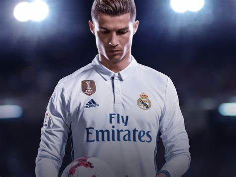
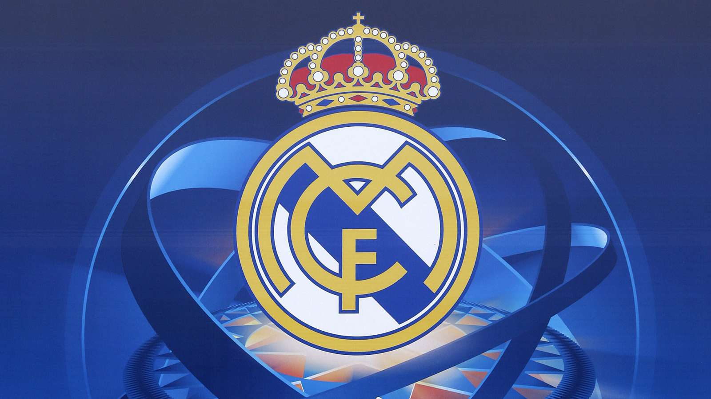
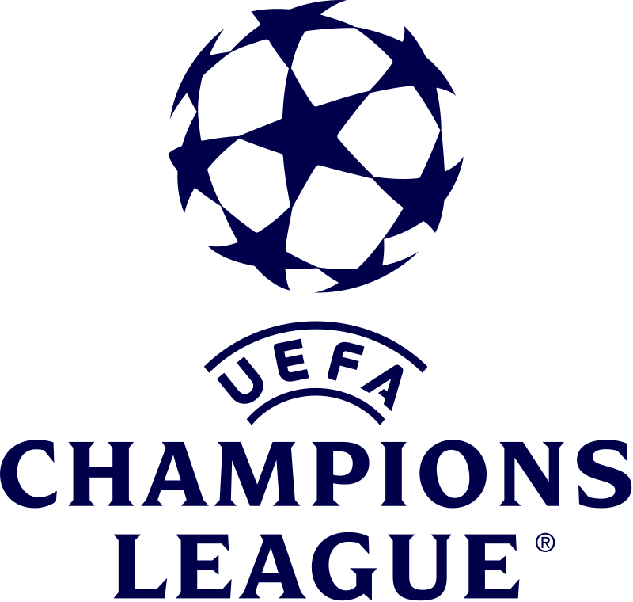
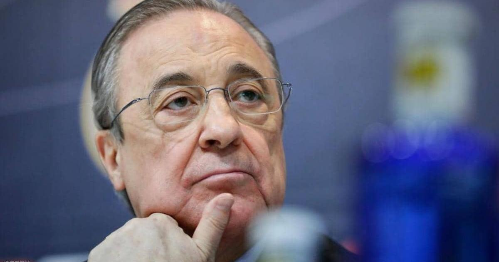

هل كريستيانو رونالدو أفضل لاعب

كريستيانو رونالدو: أفضل لاعب في العالم
كريستيانو رونالدو هو أحد أبرز نجوم كرة القدم في التاريخ. يتمتع بمهارات فنية وبدنية استثنائية، ويتميز
بطموحه وإصراره على التفوق.
في هذا المقال، سنستعرض بعض الأسباب التي تجعله أفضل لاعب في العالم
كريستيانو رونالدو أفضل هداف
لا شك أن رونالدو هو أحد أفضل الهدافين في تاريخ كرة القدم. فهو يسجل الأهداف بكل الطرق والأوضاع، سواء
بالرأس أو بالقدمين أو بالضربات الثابتة.
كما أنه يسجل في المباريات الهامة والمنافسات الكبرى، مثل
دوري أبطال أوروبا وكأس العالم. وقد حطم رونالدو العديد من الأرقام القياسية في التهديف، مثل:
- أكثر عدد أهداف في دوري أبطال أوروبا (136 هدفاً)
- أكثر عدد أهداف في بطولة كأس العالم للأندية (7 أهداف)
- أكثر عدد أهداف في تاريخ المنتخب البرتغالي (128 هدفاً)
- أكثر عدد أهداف في تاريخ كأس الأمم الأوروبية (14 هدفاً)
كريستيانو رونالدو أكثر من سجل
ليس رونالدو مجرد هداف فحسب، بل هو أيضاً صانع ألعاب وقائد لفريقه. فهو يساهم في بناء الهجمات ويمرر
الكرات لزملائه بدقة وإبداع. كما أنه يتحمل المسؤولية ويقود فريقه بشجاعة وثقة.
وقد أظهر رونالدو قدرته على التأثير في النتائج، مثل:
- أكثر عدد تمريرات حاسمة في دوري أبطال أوروبا (41 تمريرة)
- أكثر عدد تمريرات حاسمة في تاريخ المنتخب البرتغالي (42 تمريرة)
- أكثر عدد مباريات فاز بها في دوري أبطال أوروبا (105 مباراة)
- أكثر عدد مباريات شارك فيها في كأس الأمم الأوروبية (25 مباراة)
كريستيانو رونالدو يسجل من بعيد
رونالدو لا يقتصر على التسجيل من داخل منطقة الجزاء، بل يجيد أيضاً التسديد من مسافات بعيدة. فهو يمتلك
قوة ودقة في تسديداته، ويستغل أي فرصة لإرسال صواريخ إلى شباك الخصم. وقد سجل رونالدو العديد من الأهداف
الرائعة من خارج المنطقة، مثل:
- هدفه ضد بورتو في دوري أبطال أوروبا عام 2009، حيث سدد من مسافة 40 متراً
- هدفه ضد أوساسونا في الدوري الإسباني عام 2014، حيث سدد من مسافة 30 متراً
- هدفه ضد البرازيل في كأس القارات عام 2013، حيث سدد من مسافة 25 متراً
- هدفه ضد يوفنتوس في دوري أبطال أوروبا عام 2018، حيث سدد من مسافة 20 متراً
كريستيانو رونالدو ممتاز في الضربات الحرة
رونالدو هو أيضاً خبير في تنفيذ الضربات الحرة المباشرة. فهو يجيد تغيير اتجاه وسرعة الكرة بحرفية،
ويصعب على الحراس التنبؤ بها. وقد سجل رونالدو العديد من الأهداف الجميلة من الضربات الحرة، مثل:
- هدفه ضد أرسنال في دوري أبطال أوروبا عام 2009، حيث سدد الكرة بقوة من مسافة 35 متراً
- هدفه ضد إسبانيا في كأس العالم عام 2018، حيث سدد الكرة بحنكة من مسافة 20 متراً
- هدفه ضد بورتسموث في الدوري الإنجليزي عام 2008، حيث سدد الكرة بمهارة من مسافة 25 متراً
- هدفه ضد إنتر ميلان في الدوري الإيطالي عام 2020، حيث سدد الكرة بدقة من مسافة 20 متراً
كريستيانو رونالدو يثبت أن العمر مجرد رقم
رونالدو هو لاعب لا يعرف الكلمة المستحيلة. فهو يعمل بجد ويهتم بلياقته وصحته، ويحافظ على مستواه العالي
رغم تقدمه في العمر. وقد أثبت رونالدو أنه لا يزال قادراً على المنافسة مع الأفضل، وأنه لا يزال قادراً
على تحقيق الألقاب والجوائز، مثل:
- فوزه بكأس الأمم الأوروبية عام 2016، حيث كان عمره 31 عام
نادي ريال مدريد
 تأسس النادي عام 1902 في العاصمة الإسبانية مدريد.
يعتبر ريال مدريد أحد أكبر الأندية
الرياضية في العالم، وقد فاز بالدوري الإسباني 35 مرة، وعشرون مرة بكأس ملك إسبانيا، وأحرز رقمًا
قياسيًا بحيازته 14 بطولة في دوري أبطال أوروبا12. يلعب الفريق جميع مبارياته الرسمية في ملعب سانتياغو
بيرنابيو في العاصمة مدريد1. يشتهر النادي كذلك بمنافسته الطويلة الأمد مع ناديي برشلونة وأتلتيكو
مدريد، حيث تعرف المنافسة الأولى باسم الكلاسيكو، والثانية باسم ديربي مدريد.
كريستيانو رونالدو هو الهداف التاريخي لريال مدريد بـ450 هدف في 438 ظهور منذ 2009 حتى 201812.
ويحمل الرقم القياسي لأكثر من سجل أهداف في موسم واحد، حيث سجل 61 هدفًا في جميع المسابقات خلال موسم
2011–12، كما حقق رقم قياسي لأكثر عدد أهداف في الدوري في موسم واحد، حيث سجل 48 هدفً في الدوري
الإسباني لموسم 2014–153.
يأتي راؤول غونزاليس وكريم بنزيما في المركز الثاني برصيد 323 هدفاً لكلٍ
منهما، فيما يحتل ألفريدو دي ستيفانو المركز الرابع برصيد 305 أهداف
دوري أبطال أوروبا
دوري أبطال أوروبا (بالإنجليزية: UEFA Champions League)، والتي يشار إليها عادةً بدوري
الأبطال فقط (بالإنجليزية: Champions League)، هي بطولة كرة قدم أوروبية سنوية ينظمها الاتحاد الأوروبي
لكرة القدم منذ عام 1955 لأفضل أندية كرة القدم في أوروبا.
تعد هذه البطولة هي أهم بطولة في كرة القدم على مستوى الأندية في العالم، إذ تعدّ المباراة النهائية
للبطولة أكثر الأحداث الرياضية السنوية مشاهدةً في جميع أنحاء العالم، فهي تجذب أكثر من 100 مليون مشاهد
تلفزيوني.
كانت البطولة، قبل عام 1992، تسمى رسمياً كأس الأندية الأوروبية البطلة، وفي العادة يشار إليها باسم كأس
أوروبا أو كأس أبطال أوروبا. وكانت البطولة في البداية بنظام خروج المغلوب وكان يلعب فيها بطل الدوري
لكل دولة فقط إضافة إلى حامل اللقب الذي يشارك في النسخة التالية للدفاع عن لقبه. بدأت البطولة تتوسع في
سنة 1990، حيث تم دمج مرحلة المجموعات من ذهاب وإياب وزيادة عدد الفرق. وفي عام 1993 تحولت إلى اسمها
الجديد والحالي (دوري أبطال أوروبا) وتم زيادة عدد الفرق حتى أصبحت البطولة حاليا مكونة من 32 نادياً.
لتبدأ النسخة الجديدة لدوري أبطال أوروبا في موسم 1992–93.
في عام 2014 قرر الاتحاد الأوروبي لكرة القدم منح حامل لقب الدوري الأوروبي مقعد إضافي لدوري الأبطال
(بخلاف مقاعد بطولته المحلية) وذلك بهدف رفع أهمية البطولة، مما جعل إشبيلية يتأهل لدوري الأبطال
2015–16 رغم فشله في حصد أحد المراكز الأربعة المؤهلة، ليصبح الدوري الإسباني هو ثاني دوري في تاريخ
البطولة يشارك بـ 5 أندية في دور المجموعات، علماً بأن أول دوري شارك بخمسة أندية هو الدوري الإنجليزي
في موسم 2005 2006 عندما شارك ليفربول (حامل لقب 2005) بمقعد إضافي لعدم تمكنه من التأهل عبر الأربعة
مراكز الأولى في الدوري المحلي له.
فاز باللقب 23 نادياً مختلفاً، 13 منهم فاز باللقب أكثر من مرة. يُعد ريال مدريد النادي الأكثر فوزاً
باللقب، حيث فاز بالبطولة 14 مرة، بينما يحمل مانشستر سيتي الإنجليزي لقب البطولة حاليًا، حيث فاز
باللقب لموسم 2022–23 بعد فوزه على إنتر ميلان الإيطالي بنتيجة 1–0، في المباراة التي أقيمت على ملعب
أتاتورك بمدينة إسطنبول في تركيا.
نشأة البطولة
باريس، مهد بطولة دوري أبطال أوروبا.
يعود الفضل في ولادة مسابقة دوري أبطال أوروبا، إلى صحافيين فرنسيين كانوا يعملون في صحيفة ليكيب
الرياضية الفرنسية، وعلى رأسهم غابريال هانو الذي اقترح إنشاء كأس أوروبا للأندية في عام 1954، ثم كتب
زميله جاك دو ريزويك مقالاً يقترح فيه مشروع كأس أوروبا للأندية، ولاقى هذا الاقتراح ردود فعل إيجابية
في القارة العجوز، وتبع ذلك قيام جاك فيران من ليكيب أيضاً بكتابة مسودة لنظام البطولة في 25 كانون
الثاني/يناير من العام 1955، وفي اليوم الثالث من شباط/فبراير من العام 1955 نشرت الصحيفة الفرنسية
قائمة بأسماء الأندية لخوض النسخة الأولى من كأس أوروبا للأندية ولبت هذه الأندية الدعوة، خصوصاً أن
الاتحاد الدولي لكرة القدم لم يمانع إنشاء المسابقة بعد أن وافق على المشروع المقدم من الصحيفة.
تاريخ
المقالة الرئيسية: التسلسل الزمني لدوري أبطال أوروبا
النظام القديم
بدأت البطولة عام 1955 تحت مُسمّى (كأس الأندية الأوروبية الأبطال)، وعادةً ما يُشار إليها باسم كأس
أوروبا أو كأس أبطال أوروبا. وكانت البطولة في البداية بنظام خروج المغلوب، وكان يلعب فيها بطل الدوري
لكل دولة فقط. بدأت البطولة تتوسع في سنة 1990، حيث تم دمج مرحلة المجموعات من ذهاب وإياب وزيادة عدد
الفرق.
لقطة من مباراة أياكس وبنفيكا عام 1969
1955–1970
هيمن ريال مدريد الإسباني على النسخ الأولى من المسابقة، فحصد أول خمسة ألقاب (1956–1960) قبل أن يكسر
احتكاره نادي بنفيكا البرتغالي في عامي 1961 و1962، بعدها دخلت الأندية الإيطالية بقوة ممثلةً بميلان
عامي 1963 و1969 وإنتر ميلان الإيطالي الذي توج مرتين متتاليتين عامي 1964 و1965 واستطاع ريال مدريد
استرجاع اللقب عام1966.
1970–1980
جاء دور الهيمنة الهولندية في بداية السبعينيات؛ إذ حصد أياكس ثلاثة ألقاب متتالية من عام 1971 وحتى عام
1973 ثم ناب عنه بايرن ميونخ الألماني الذي حقق ثلاثية أيضاً (من 1974 حتى 1976)، وفي المواسم الستة
التي تلت حصدت الأندية الإنكليزية ألقاب المسابقة، فتوج ليفربول عامي 1977 و1978 ونوتنغهام فورست عامي
1979 و1980.
1980–1992
فاز ليفربول في عام 1981 وأستون فيلا في عام 1982، وفي نهاية الثمانينات، برز نادي ميلان الإيطالي، إذ
تمكن من الفوز بنسختي 1989 و1990 وفرض نفسه أحد أقوى الأندية في المسابقة في هذه الحقبة. فاز نادي
الميلان بلقب عام 1990، وكان عام 1991 عام سعيد على نادي ريد ستار بلغراد حيث استطاع أن يفوز بأول لقب
له. وتلاه عام 1992 أيضا كان عامًا سعيد لنادي برشلونة الإسباني الذي استطاع أن يحصد أول بطولة له بعد
فوز 1–0 على سامبدوريا الإيطالي.
النظام الحديث (الحالي)
في عام 1992 قرر الاتحاد الأوروبي لكرة القدم تغيير البطولة وتحولت إلى اسمها الجديد والحالي (دوري
أبطال أوروبا) وتم زيادة عدد الفرق حتى أصبحت البطولة حالياً مكونة من 32 نادياً.
1992–2000
كان نادي أولمبيك مارسيليا على موعد مع أول لقب له في بطولة دوري ابطال أوروبا في شكلها الجديد 1993.
وعاد إيه سي ميلان إلى منصة التتويج بعد أن فاز بلقب سنة 1994. كانت أعوام 1996 و1997 و1998 أعوام
التألق ليوفنتوس الإيطالي في تاريخه، حيث استطاع أن يصل إلى نهائي البطولة 3 مرات على التوالي لكنه لم
يحرز اللقب إلا عام 1996 وفشل عامي 97 و98. كانت أغرب النهائيات في البطولة من نصيب مانشستر يونايتد،
الذي خطف الفوز في الدقيقة الأخيرة من مباراته مع بايرن ميونخ عام 1999 حيث تمكن من إحراز هدفين في
الدقيقة الأخيرة ليفوز بالمباراة النهائية.
2000–الآن
عاد ريال مدريد من جديد إلى الساحة بفريقه الذهبي للهيمنة على البطولة، حيث أستطاع أن يحصد ثلاثة ألقاب
خلال خمسة أعوام (1998 و2000 و2002). شهدت أيضا هذه الفترة بزوغ اسم فالنسيا الإسباني بشكل قوي حيث
استطاع التأهل إلى نهائي البطولة عامي 2000 و2001 إلا أنه لم يتمكن من الفوز بالبطولة. استطاع بايرن
ميونخ حصد لقبه الرابع عام 2001 وجاء بعده إيه سي ميلان بلقبه السادس عام 2003. وفي عام 2004 تمكن نادي
بورتو بقيادة مدربه الشاب جوزيه مورينهو من إحراز اللقب في مفاجأة كبيرة من نوعها.
لقطة من مباراة مانشيستر يونايتد و بايرن ميونخ في موسم 2009–2010
وفي عام 2005 جرت المباراة الأكثر دراماتيكيةً وتقلباً في تاريخ هذه البطولة، فبعد أن تقدم نادي أيه سي
ميلان على نظيره ليفربول بثلاثة أهداف نظيفة تمكن الأخير في وقت قياسي من إحراز التعادل حتى وصلوا إلى
ركلات الترجيح، وتمكن ليفربول من إحراز الفوز باللقب وقتها. كانت سنة 2006 سنة التألق للآرسنال، ليكون
النادي الإنجليزي على موعده مع أول نهائي له في البطولة، إلا أنه اصطدم بطموح نادي برشلونة المميز
وقتها، ليفوز باللقب الثاني له. وتمكن ناديي أي سي ميلان ومانشستر يونايتد من إحراز لقبي 2007 و2008 حتى
عاد نادي برشلونة من جديد لإحراز اللقب عام 2009، واستمر نجاحهم في البطولة التالية إلا أنهم اصطدموا
بفريق إنتر ميلان الذي عاد بقوة بعد غياب 45 عامًا عن البطولة والذي أطاح بهم في المباراة قبل النهائية،
واستطاع إحراز البطولة عام 2010 في النهائي أمام بايرن ميونخ. عاد برشلونة مرة أخرى ليحرز اللقب عام
2011 بعد فوزه على مانشستر يونايتد في النهائي المثير بنتيجة 3–1 ليحقق لقبه الرابع، ويتساوى في عدد
الألقاب مع أياكس الهولندي. وفي عام 2012 استطاع تشيلسي الانتصار على بايرن ميونخ بركلات الترجيح ليحرز
أول لقب له في تاريخ البطولة، وفي عام 2013 وبعد خسارته لنهائي 2010 و 2012 عاد نادي بايرن ميونخ من
جديد لإحراز اللقب القاري للمرة الخامسة في تاريخه، وفي عام 2014 وبعد 12 سنة من الغياب عاد ريال مدريد
بعد انتصاره على أتلتيكو مدريد لإحراز اللقب للمرة العاشرة في تاريخه، وفي عام 2015 تمكن نادي برشلونة
من إحراز لقبه الخامس بعد فوزه على يوفنتوس بنتيجة 3–1 وفي عام 2016 تمكن ريال مدريد للمرة الحادية عشر
في تاريخه بإحراز اللقب بعد فوزه على أتلتيكو مدريد بركلات الترجيح 5/3 وهي المرة الثانية الذي يتفوق
فيها النادي الأبيض على غريمه أتلتيكو مدريد في نهائي دوري أبطال. ليعود النادي الملكي في 2017 للتتويج
مرة أخرى للمرة الثانية على التوالي كأول نادي في تاريخ البطولة يحقق هذا الإنجاز بعد فوزه في النهائي
4–1 على يوفنتوس في كارديف. ومرةً أخرى يعود ريال مدريد في العام التالي 2018 ليُحقق فوزه الثالث على
التوالي والرابع في خمسة مواسم بعد أن تغلب في نهائي الأبطال أمام نادي ليفربول بنتيجة 3–1 في كييف في
أوكرانيا. وفي سنة 2019، عاد نادي ليفربول بعد خسارته بالنهائي في السنة السابقة أمام ريال مدريد ليفوز
بدوري الأبطال أمام توتنهام بنتيجة 2-0 بهدفي لكل من محمد صلاح في الدقيقة 2 من ضربة جزاء، ومن ديفوك
أوريجي في الدقيقة 87. عاد بايرن ميونخ ليعانق اللقب من جديد بعد غياب دام سبعة أعوام في سنة 2020 بعد
فوزه على باريس سان جيرمان بهدف يتيم على ملعب دا لوز في لشبونة، في سنة 2021 حقق تشيلسي الإنجليزي
اللقب الثاني له في تاريخه بعد الفوز على مانشستر سيتي بهدف يتيم على ملعب دو دراغاو في بورتو. عاد ريال
مدريد مجددًا في عام 2022 ليعزز رقمه في زعامة القارة بتحقيقه اللقب الرابع عشر بعد فوزه على ليفربول
بهدف يتيم على ملعب ستاد دو فرانس. في العام التالي، حقق مانشستر سيتي لقبه الأول بعد أن فاز بهدف نظيف
أمام إنتر ميلان في عام 2023 على ملعب أتاتورك الأولمبي في إسطنبول في تركيا.
النظام السويسري
في عام 2021 أعلن الاتحاد الأوروبي لكرة القدم تغييرًا رسميًا لنظام دوري أبطال أوروبا وزيادة عدد الفرق
إلى 36 فريقًا اعتبارًا مِن عام 2024.
عنا
نحن فريق مطورين ندرس في الجامعة الدولية للعلوم والنهضة في كلية الهندسة المعلوماتية
إذا كنت تريد معرفة المزيد عنا يمكنك زيارة الصفحة الخاصة بنا أعلاه أو من خلال
هذا الرابط
المقالات الشائعة
بطولة السوبر ليغ
بيريز يريد إقامة بطولة السوبر ليغ، وهو المشروع الذي يحاربه الاتحاد الأوروبي. وأكد بيريز عن الدور الذي يقوم به من أجل إقامة بطولة السوبر ليغ، حيثُ إعتبر أن إقامة السوبر ليغ ضرورة مُلحة، خاصة أنها لن تتعارض مع المسابقات المحلية ولا حتى الأوروبية أو القوانين الموجودة 1. ومن المتوقع أن تضم البطولة 64 فريقًا

بعد خسارة قاسية من فياريال.. برشلونة يسجل رقماً سلبياً لم يحدث منذ قرابة قرن
يبدو أن برشلونة في عهد تشافي هيرنانديز على شفا الانهيار، بعد تلقي البيت الكتالوني هزيمة ثقيلة
جديدة، أدت إلى إعلان المدير الفني عن رحيله بنهاية الموسم الجاري، والأصعب من ذلك، أنه سجل
رقماً سلبياً يحدث لأول مرة منذ قرابة قرن.
برشلونة سقط بخمسة أهداف على أرضه أمام فياريال السبت 27 كانون الثاني، ضمن مباريات المرحلة
الـ22 من الدوري الإسباني لكرة القدم، وهو حدث لا يتكرر كثيراً.
وكان آخر مرة تلقى فيها النادي الكتالوني خمسة أهداف في إحدى المباريات، في سقوطه الشهير أمام
بايرن ميونخ في دوري الأبطال عام 2020، عندما خسر بثمانية أهداف مقابل هدفين.
ووفقاً لخبير الإحصاءات مستر تشيب، فإن آخر هزيمة تلقى فيها البلوغرانا خمسة أهداف في الليغا،
كانت على ملعب سيوتات دي فالنسيا، عندما خسر أمام ليفانتي 5-4 عام 2018، لتنتهي آمال الفريق في
إنهاء الدوري الإسباني من دون هزيمة.
أما آخر هزيمة تلقى فيها برشلونة خمسة أهداف على أرضه في مختلف المسابقات، فكانت على يد ريال
سرقسطة الذي أسقطه على ملعبه كامب نو في كأس السوبر الإسبانية، لعام 1994 بنتيجة 4-5.
في حين كانت آخر هزيمة في الدوري الإسباني بخمسة أهداف على أرض النادي الكتالوني، بواسطة الغريم
ريال مدريد، عندما هزمه 1-5 في كامب نو عام 1963